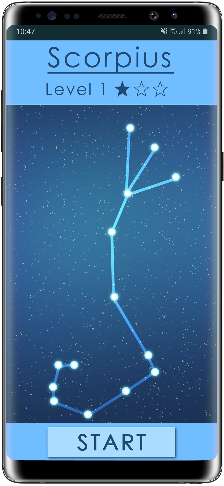
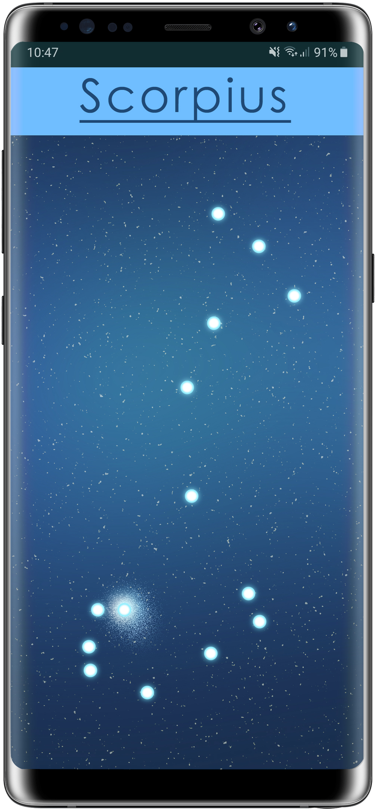
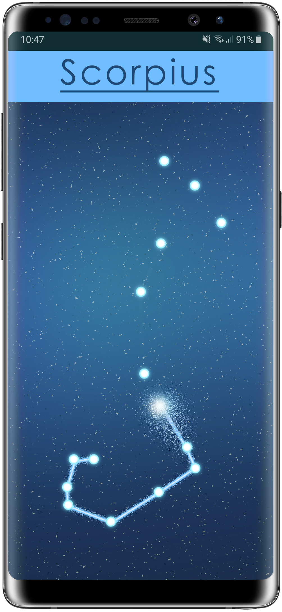
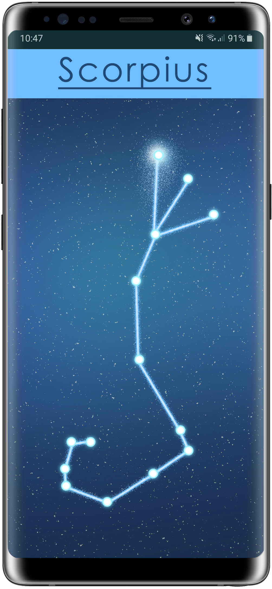
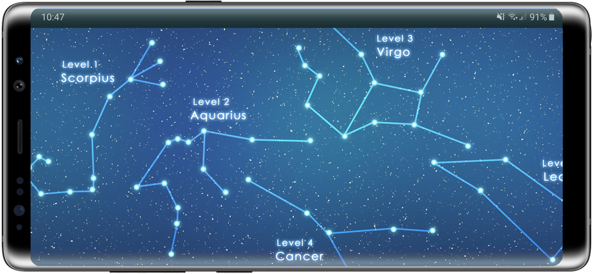
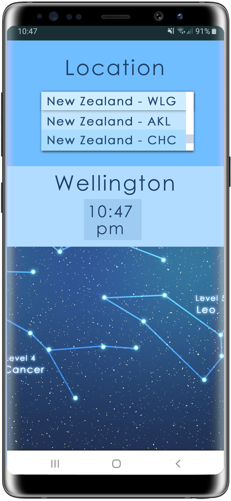

Stargazer, a mobile game to teach users the constellations of the night sky. While many people take the time to go stargazing, spotting the constellations themselves can prove a challenge. Stargazer is a puzzle-based game that revolves around memorizing these patterns. Offering a fun and engaging mobile experience while also teaching users to memorize the shapes of constellations.
Gameplay

The player is shown the constellation

The game starts with only the stars visable

Players tap stars to drag a line connecting them

To win players must correctly remember the shape of each constellation
Offline use
While the game provides location based gameplay to users with an internet connection, gameplay will still function as intended when offline. Rather than location prompted constellations, users can choose which constellation they want to play through.

Progression
Each constellation will function as a contained level. However in order to fully learn each constellation users must play through each one several times. In early stages they will be provided with an image of the constellation they need to match. As the levels progress however gameplay will rely more heavily on memory. Along side this difficulty will scale with limits to the number of mistakes a player can make.

Location
Central city locations often make It difficult to go stargazing. Learning constellations can be challenging enough, however light pollution often makes it hard to even spot the stars themselves. The game will offer users the choice to input their location and time zone. In this case the game will present levels based around visible constellations to their current location. Meaning that even if stars are obscured by light pollution, they can still have the experience of learning the stars.